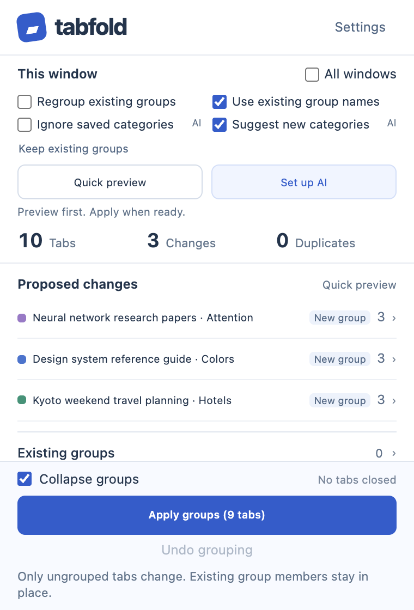
01-quick-preview
Local quick preview, before tabs change. No API key and no AI request.
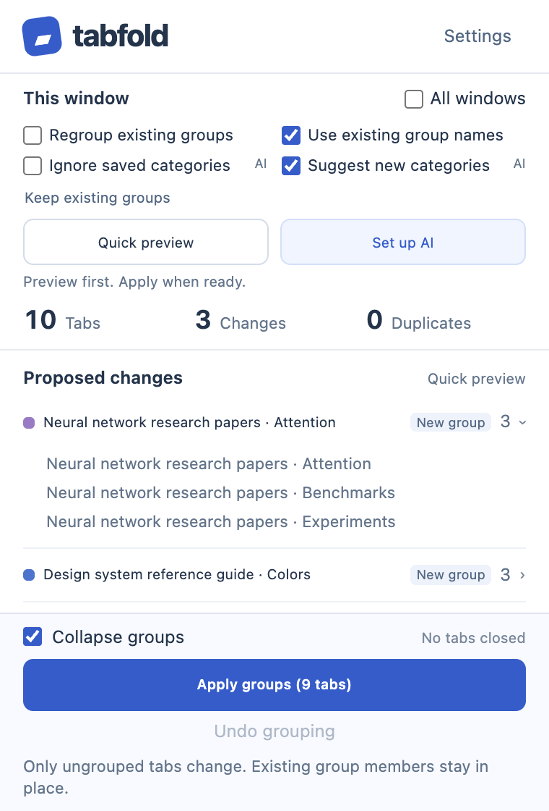
02-review-group-members
Expand a proposed group to review its sample tabs.
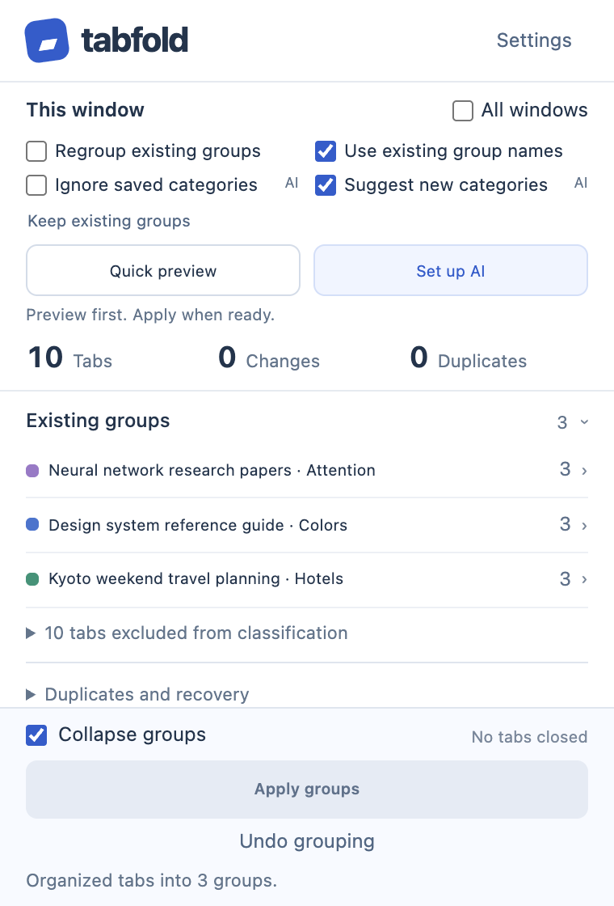
03-applied-groups
Real Apply result: native Chrome groups created; Undo is available.
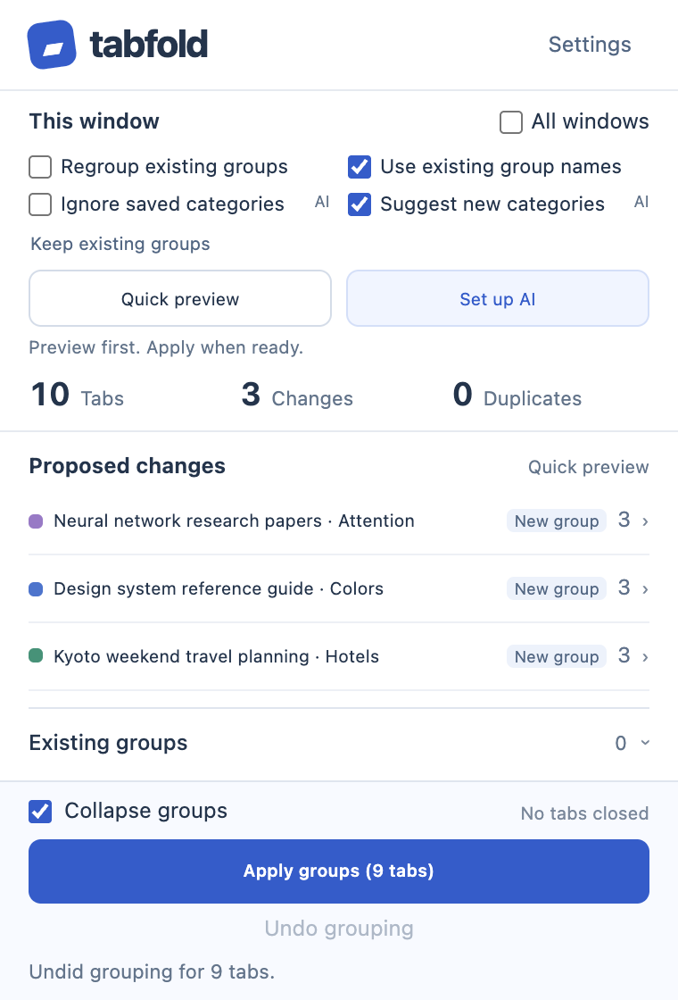
04-undo-grouping
Real Undo result: original tab group assignments restored.
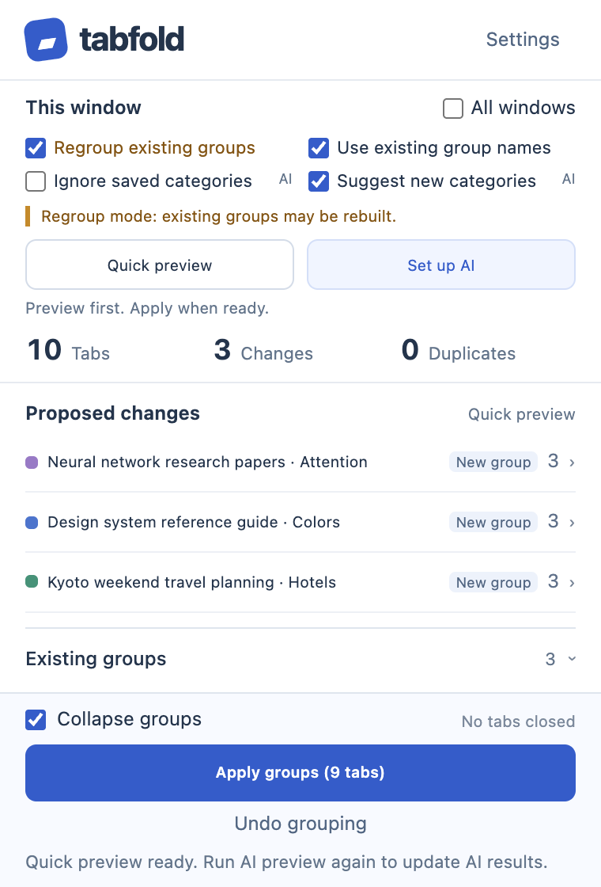
05-regroup-preview
Regroup mode previews rebuilding existing groups; protected tabs are excluded.
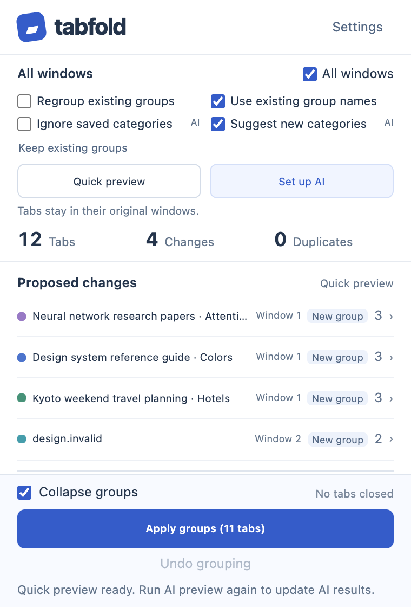
06-all-windows
All windows scope, with window labels on proposed groups.
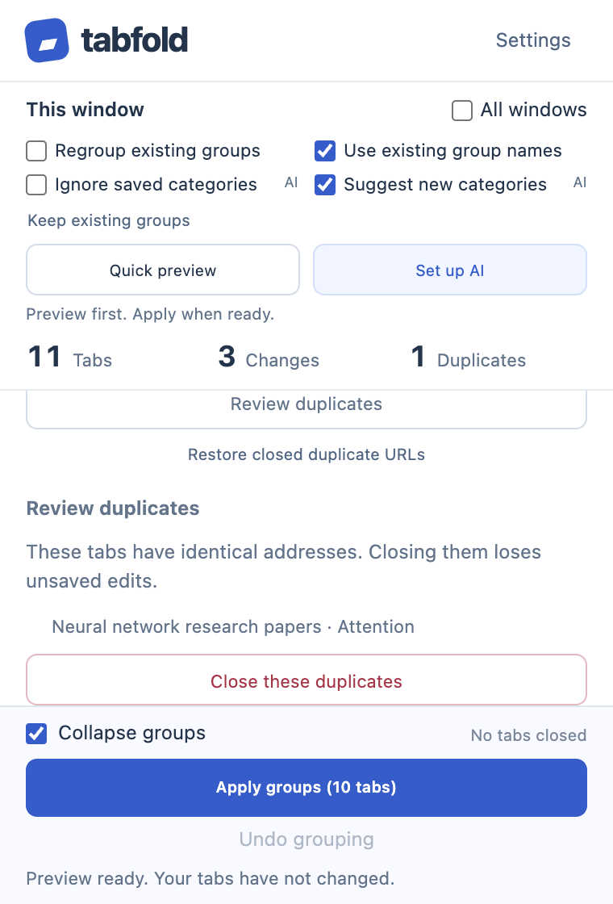
07-review-duplicates
Explicit duplicate review with the unsaved-edits warning.
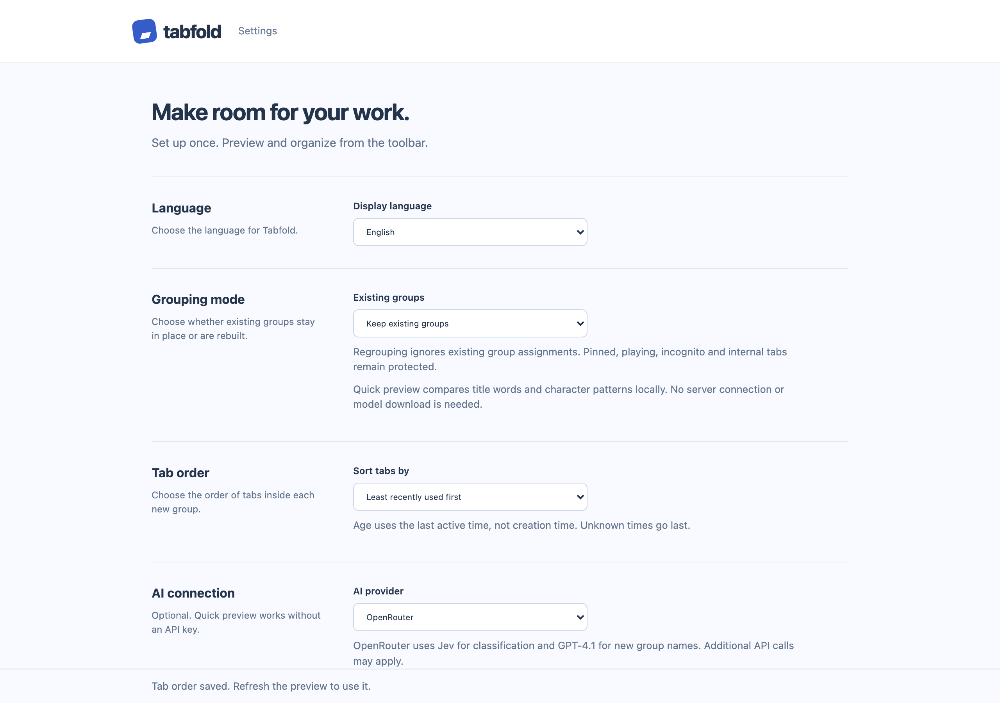
08-settings-language-sorting
Settings: language, preservation mode, and least-recently-used-first ordering.
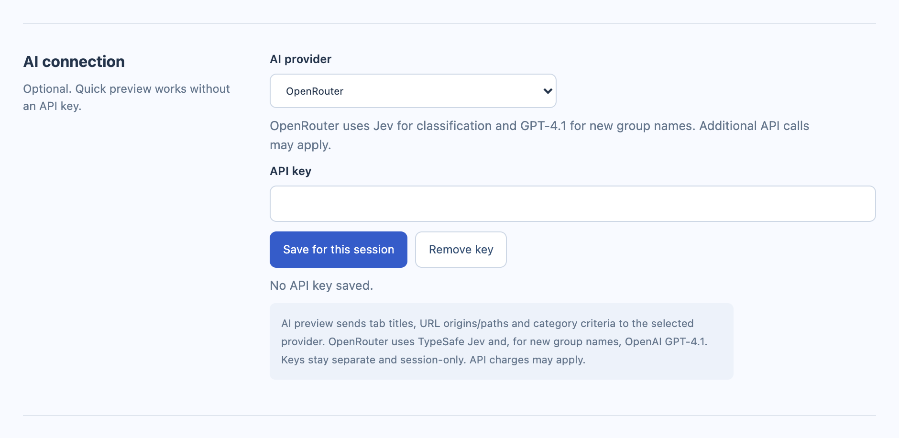
09-openrouter-privacy
Optional OpenRouter configuration, empty key field, session-only storage and privacy disclosure.
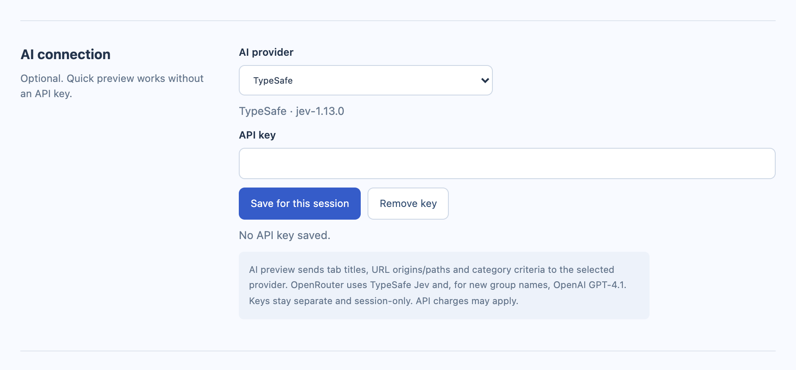
10-typesafe-privacy
Optional TypeSafe configuration, empty key field, same privacy disclosure.
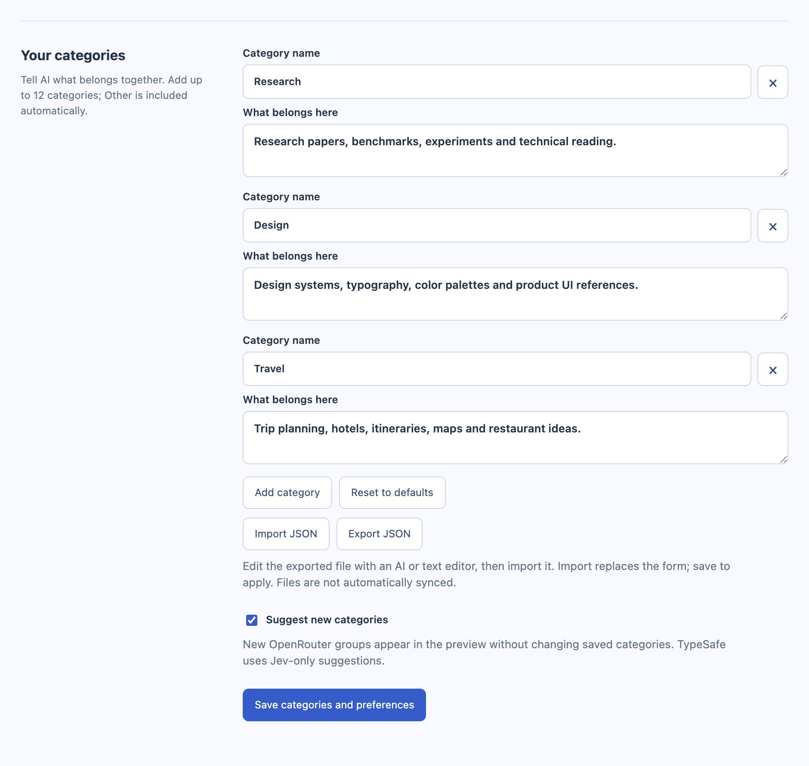
11-categories-json-import
Three demo categories imported into the form. They remain drafts until Save.
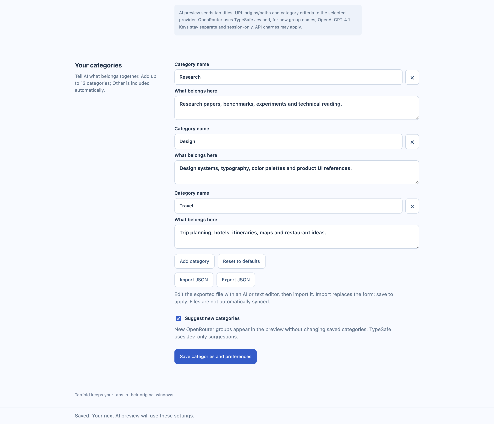
12-categories-saved
Saved category preferences with Import/Export JSON controls and real save confirmation.